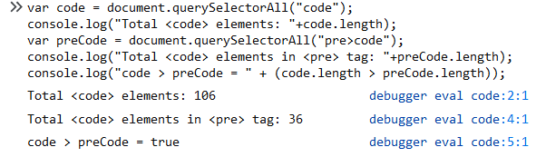
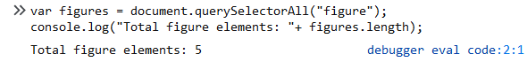
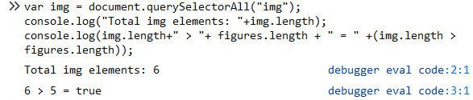

Week #2 Questions and Answers
Question 1
Question 2
b. What is the CSS selector that you would use to select all the code elements contained in pre elements? How many are there? Are there more or less than above. Why?

The code element represents a fragment of computer code. It could be an XML element name, a file name, a computer program, or any other string that a computer would recognize.
The pre element represents a block of preformatted text, in which structure is represented by typographic conventions rather than by elements.
That is, all the code elements contained in pre elements is less than all the code elements.
c. What is the CSS selector that you would use to select all the figure elements? How many are there?

d. What is the CSS selector that you would use to select all the img elements? How many are there? Is this different from the above? Why?

A figure tag is an image, illustration, diagram, code snippet, etc., that is referenced in the main flow of a document, but that can be moved to another part without affecting the main flow. A img element embeds an image into the document. It creates a holding space for the referenced image.
Question 3
b.